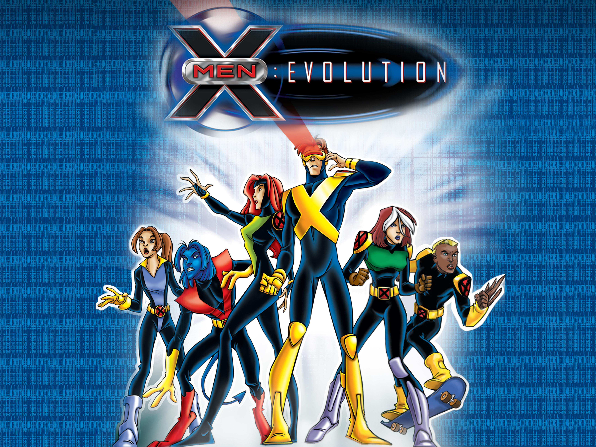
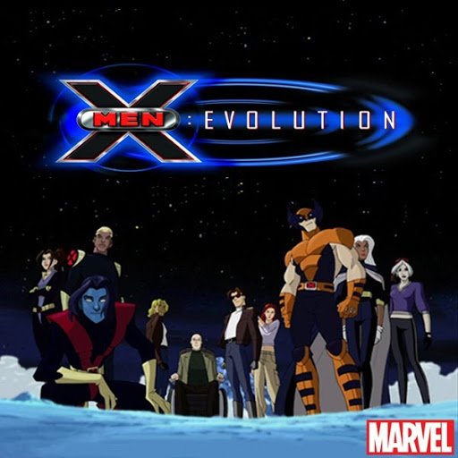
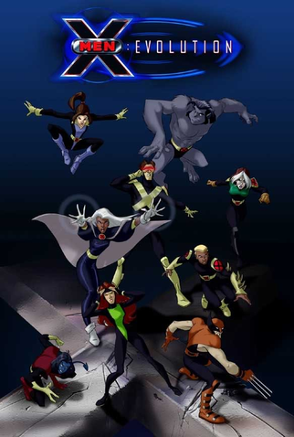
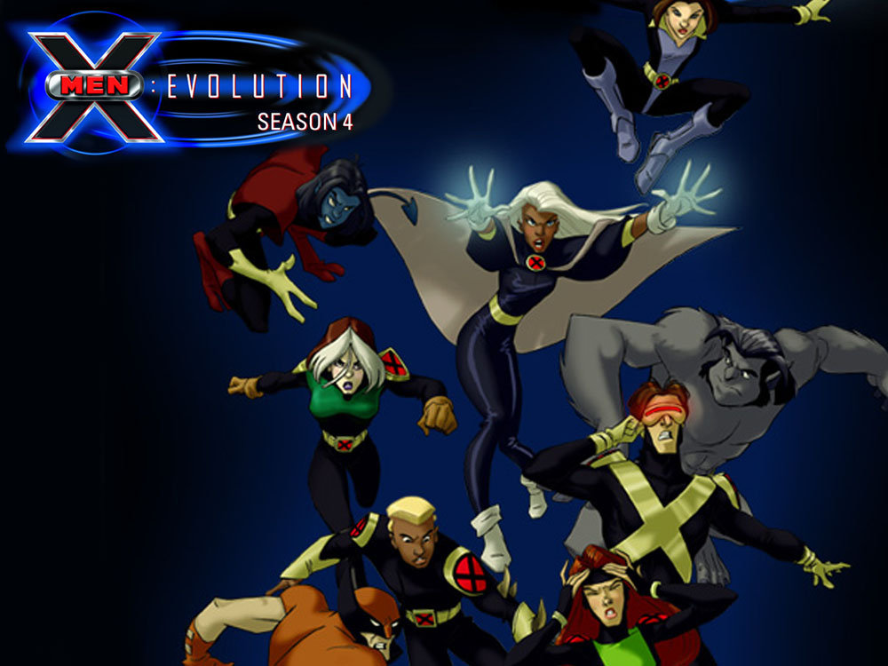

História
Primeira Temporada

Na primeira temporada da série animada, os X-Men, liderados por Professor X, recrutam novos membros, incluindo Noturno, Lince Negra, Spyke e Vampira. Noturno descobre verdades sobre sua mãe enquanto Wolverine busca entender seu passado. Vampira, que antes fazia parte da Irmandade de Mutantes, se une aos X-Men, e a rivalidade entre Wolverine e Dentes-de-Sabre se intensifica. Magneto, que controla a Irmandade, capta mutantes para aumentar seu poder e eliminar emoções, mas esse plano resulta em consequências inesperadas, culminando na derrota de Mística pela Tempestade e na desintegração da Irmandade.
Segunda Temporada

A segunda temporada introduz novos mutantes como Fera, Homem de Gelo, Magma e outros. Os X-Men enfrentam vilões que retornam da destruição do Asteroide M. Jean perde o controle de sua mutação, enquanto Mística, disfarçada de Misty Wilde, invade a Mansão Xavier. Wanda, filha de Magneto, se junta à Irmandade e ajuda a derrotar os X-Men. Ao final, a mansão é destruída, Ciclope se revolta e revela Mística como traidora.
Terceira Temporada

Após a batalha contra o Sentinela, os mutantes revelam sua existência, enfrentando hostilidade do público. Xavier é encontrado, Pietro retorna à Irmandade e Mística é derrotada ao atacar Ciclope. Wanda procura Magneto, que altera suas memórias com Mestre Mental. Spyke abandona os X-Men e se junta aos Morlocks. Vampira perde o controle, descobre ser filha de Mística e entra em hospitalização. O ressurgimento de Apocalipse é iminente. Mística é manipulada a abrir uma porta, resultando na libertação de Apocalipse, que rapidamente derrota todos os mutantes.
Quarta Temporada

Vampira empurra a estátua de Mística de um rochedo, provocando sua destruição e ouvindo uma explosão atômica. Apocalipse estabelece três cúpulas no México, China e Egito. Magneto, em confronto direto, ataca a cúpula mexicana e desaparece após uma explosão atômica. A Irmandade, em um acidente no metrô, tenta criar desastres para lucrar e prejudicar os X-Men, mas a farsa é descoberta. Wolverine e X-23 destroem a sede da Hidra, enquanto Spyke e os Morlocks lutam por justiça aos mutantes. Legião usa os poderes de Xavier para aumentar sua força. Apocalipse decide transformar a humanidade em mutantes, levando Xavier e Tempestade a confrontá-lo no Egito, onde acabam desaparecendo. Fury e Trask comandam as sentinelas para destruir as cúpulas. Apocalipse revela a defesa de seus 4 cavaleiros: Magneto, Xavier, Tempestade e Mística. As batalhas finais ocorrem no Egito, China e México. Vampira, junto a Nick Fury e Dorian, usa o poder de desligar energias para aprisionar Apocalipse no tempo. No final, Xavier conversa com os X-Men sobre o futuro e a evolução dos mutantes.
.jpeg)